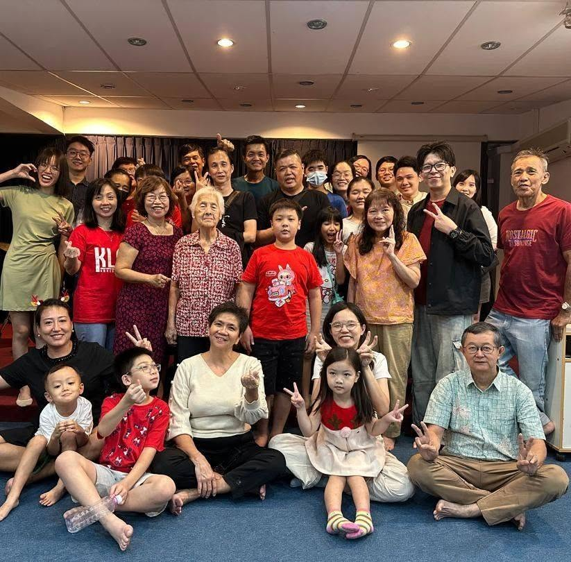

SunWEEKLY
Sunday Service
Every Sunday · 10:00 AM – 12:00 PM
Lunch together after the Sunday service.
Join us for worship, God's Word and fellowship.
Kuala Lumpur Christian Fellowship
A place to worship God, build meaningful relationships and grow together as a Christian community.
About Us
Discover a community committed to worshipping God, growing in His Word, building meaningful fellowship and reaching out to others with the love of Christ.
Kuala Lumpur Christian Fellowship is a Christian community where we come together to worship God, grow in faith and encourage one another.
We seek to build a welcoming fellowship where people can develop genuine relationships, deepen their understanding of the Bible and live out their faith in everyday life.
Gathering together to worship God and honour Him through our lives.
Building genuine relationships, encouraging one another and growing together.
Growing in faith through God's Word, prayer and a deeper relationship with Him.
Sharing the love of Christ and reaching out to our community and beyond.
What's Happening
Stay connected with KLCF through our regular gatherings, worship, classes and fellowship activities.
Every Sunday · 10:00 AM – 12:00 PM
Lunch together after the Sunday service.
Join us for worship, God's Word and fellowship.
Every Saturday · 3:00 PM – 5:00 PM
Sunday School
Saturday · Every two weeks · 5:30 PM – 7:00 PM
Instrument Training Class · Before the youth gathering.
Saturday · Every two weeks · 7:30 PM – 9:00 PM
A time for young people to grow and fellowship together.
Saturday · Every two weeks · 7:30 PM – 9:00 PM
A time to connect, share and grow together in faith.
Life At KLCF
A glimpse of worship, fellowship, learning and the people who make KLCF a community.

Find Us
Visit us at our fellowship location in Setapak, Kuala Lumpur.
24-1, Jalan 9/23A, Medan Makmur Off Jalan Usahawan, Setapak, Kuala Lumpur, Malaysia, 53200
Open in Google Maps →Connect With Us
Have a question or want to stay connected? Reach out to us or follow KLCF for the latest fellowship updates and announcements.